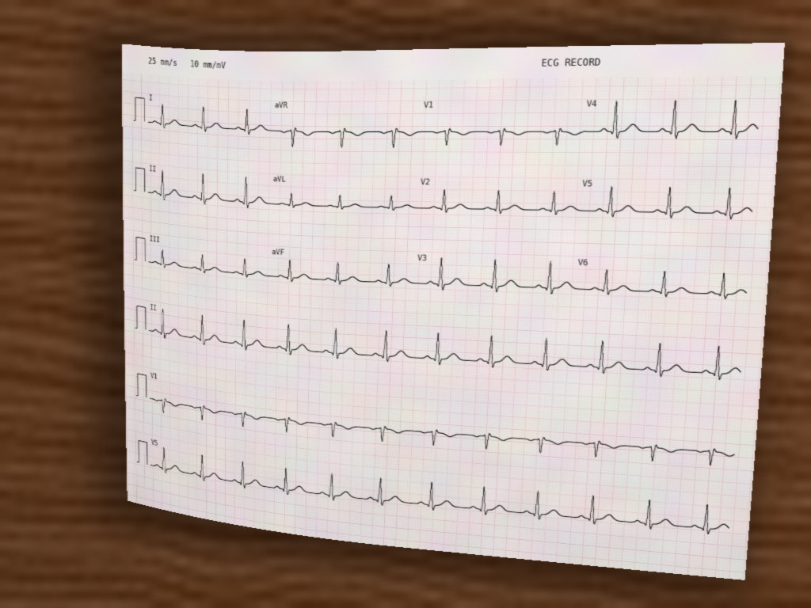

Paper, tables & lighting
The procedural scene keeps geometry, normals, illumination and visibility together. A paper deformation changes both the photographed trace and its target mask.
Eight paper surfaces#
flat, curl, fold, accordion, crumpled, wrinkled, rolled and corner use a 2.5D height-field model. Select one surface or let surface_mode='mixed' sample the family.
render = ECGImageLayer(parameters={
"surface_mode": Choice(["flat", "fold", "crumpled"]),
"surface_strength": Uniform(.2, .8),
"relief_view": [.4, -.3],
})


Browse the paper gallery for the full set of surfaces and palettes. These are procedural approximations. They do not solve cloth dynamics or arbitrary sheet self-overlap.
Tables and paper colors#
Built-in table families are wood, marble, laminate, fabric, metal, clinical, plain and leather. Paper has eight palettes. Grid ink has five independent palettes.
render = ECGImageLayer(parameters={
"background_type": Choice(["wood", "marble", "clinical"]),
"paper_palette": Choice([0, 1, 2, 4]),
"palette": 0, # red grid
})

Lighting and shadows#
Three colored lights, ambient illumination, diffuse/specular shading, a flash term and approximate ambient occlusion affect the paper. The scene also supports sampled height-field shadows and paper cast/contact shadows.
Foreground shadow families are none, edge, phone, hand, blinds, window and ellipse. They are analytic silhouettes. They do not contain full 3D hand or phone geometry.

render = ECGImageLayer(parameters={
"object_shadow": "blinds",
"object_shadow_strength": .5,
"ambient_light": .65,
})
Inspect the scene#
batch = render.render_batch(signals, stage="all", return_scene=True,
return_field=True, return_canonical=True)
normals = batch.scene["normals"]
height = batch.scene["height"]
visibility = batch.targets["valid"]
Scene maps are opt-in inspection outputs. Avoid retaining them when a training step only needs RGB or trace masks. External document assets can supply pre-rendered 3D visibility maps for shapes outside the procedural model.